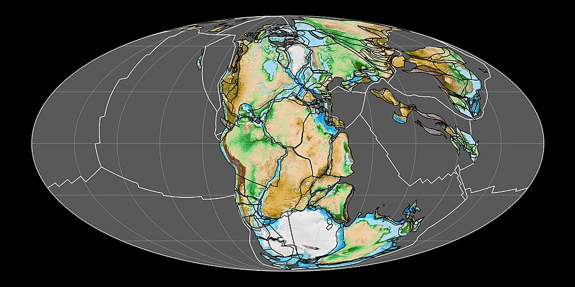
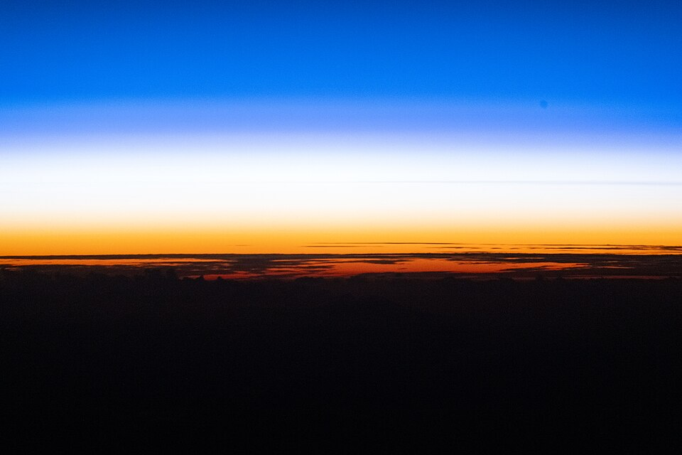
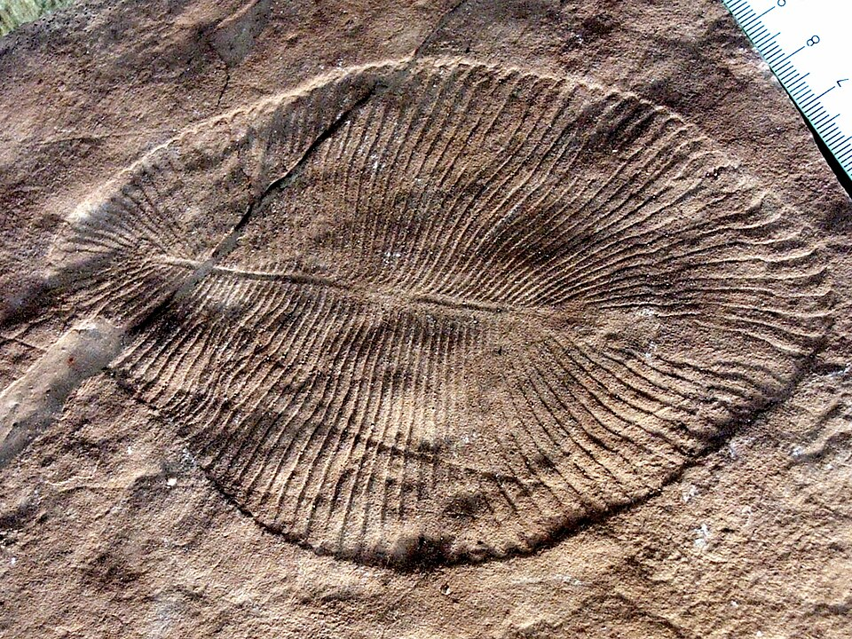
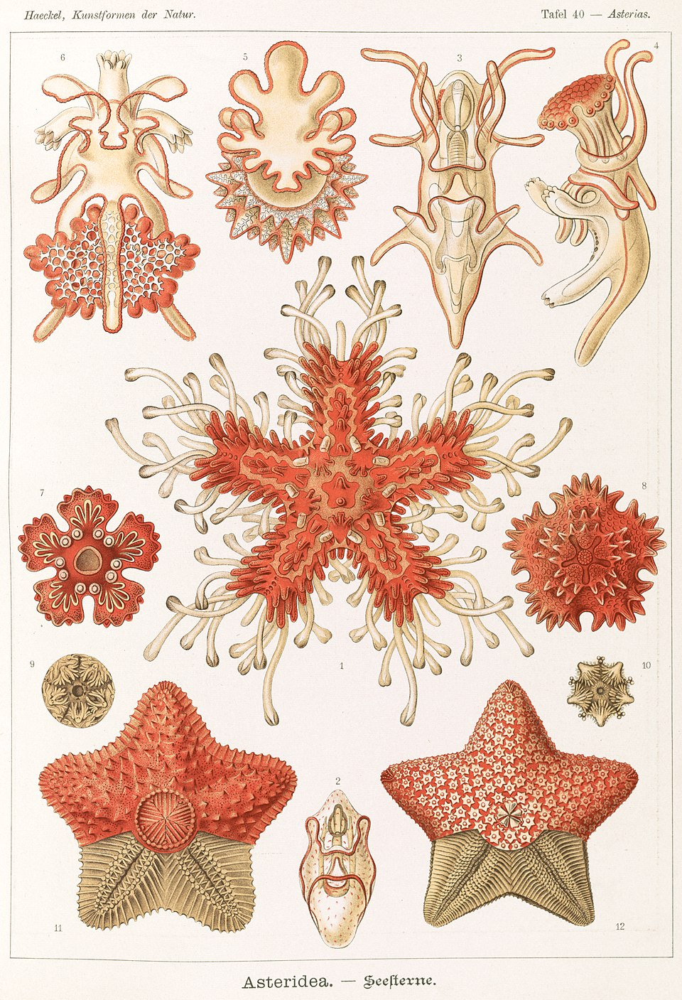
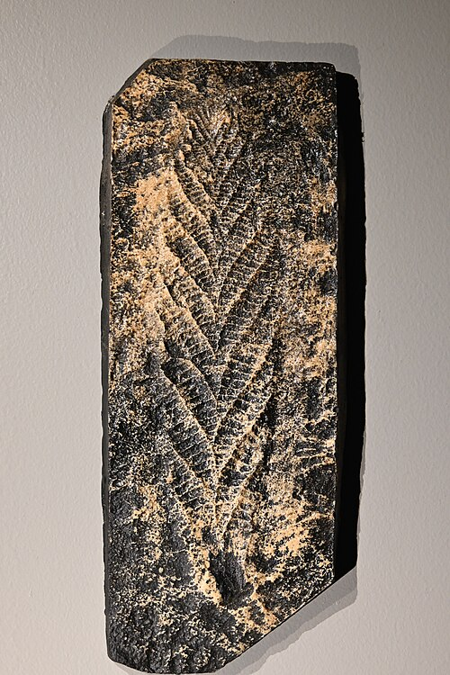

FOR A SUNRISE

(Pangaea, ~200 Mya)

FIG. 2 — THE SEA, LONG DISTANCE in manchuria IN MANCHURIA. a landmass visible only in certain weather. it is not manchuria. it has never been manchuria, which is the point. big boat BIG BOAT.archival audio, 1940s. legible upside down and right side up, like most inheritances. insulae incognitae INSULAE INCOGNITAE. islands present on no two charts in the same place. approach by dead reckoning only; night bus NIGHT BUS. departs nightly, frame by frame, one note at a time. now NOW.updated whenever. dungan DUNGAN.returns before waking, usually. do not call its name loudly.
kitchen, ppp
whisper house
the egg will gradually bloom into a telephone
stairs
three floor home
verses stacked in a triangle
corridor
memory palace
doors that open onto further doors
attic radio
things my parents thought when i was unborn
whispered, multilingual, cut before finishing
garden door
four bedroom garden
2×2 and overgrown
pantry
adobar
precolonial technique, japanese pantry

(ediacara hills, 558 Mya)

(Haeckel, Asteridea, 1904)

— BELOW 635 Ma · SUBMERGED SPEECH BED — 口 / mouth a mouth underwater; translations surface when touched.you have reached the basement of this page.
manual · the old page · guestbook
of another shore · a field guide · no two visits survey the same territory